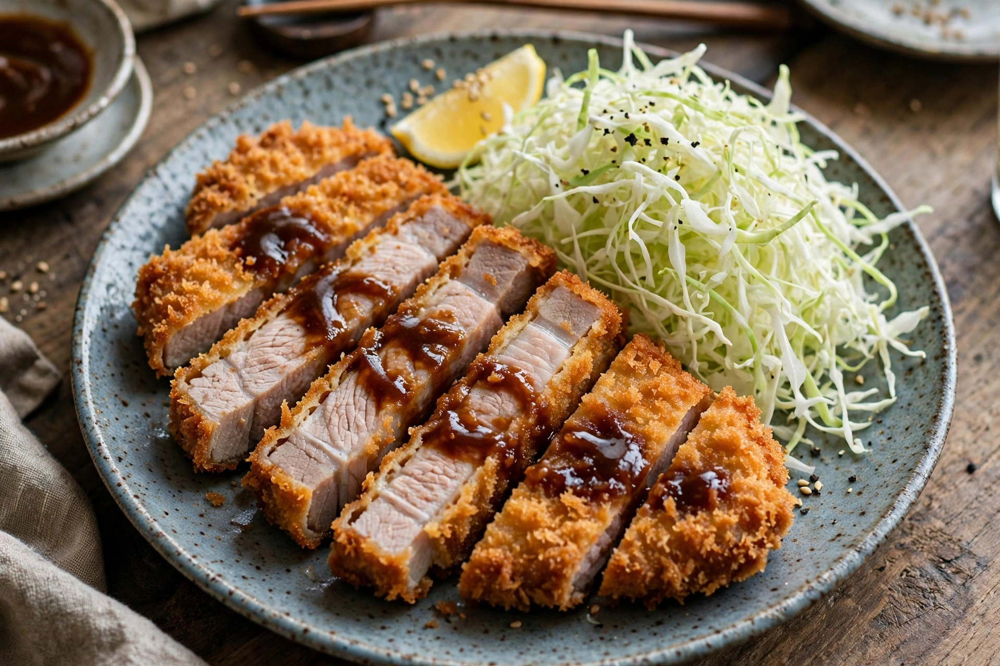

From Wikipedia, the free encyclopedia
| Tonkatsu | |
|---|---|
 | |
| Type | Cutlet |
| Place of origin | Japan |
| Main ingredients | Pork loin or fillet, flour, egg, panko, cabbage |
Tonkatsu (Japanese: 豚カツ, "pork cutlet") is a Japanese dish consisting of a breaded, deep-fried pork cutlet, generally served sliced with shredded cabbage, rice, miso soup, and a thick Worcestershire-style tonkatsu sauce. It is one of the best-known yōshoku dishes — Western-influenced foods adapted to Japanese tastes during the Meiji era.
Tonkatsu was introduced in 1895 at the Rengatei restaurant in Ginza, Tokyo, adapting the European veal cutlet to pork after the Meiji government encouraged meat eating. The use of coarse, flaky panko breadcrumbs and deep-frying in oil, rather than pan-frying, became its defining Japanese characteristics.
Katsudon simmers the cutlet with egg and onions over rice; katsu curry serves it over Japanese curry rice; katsu sando sandwiches it with sauce between milk bread. Chicken (chikin katsu), beef (gyū katsu), and ham versions also exist. Tonkatsu is associated with good luck before exams because katsu is a homophone of the verb "to win".